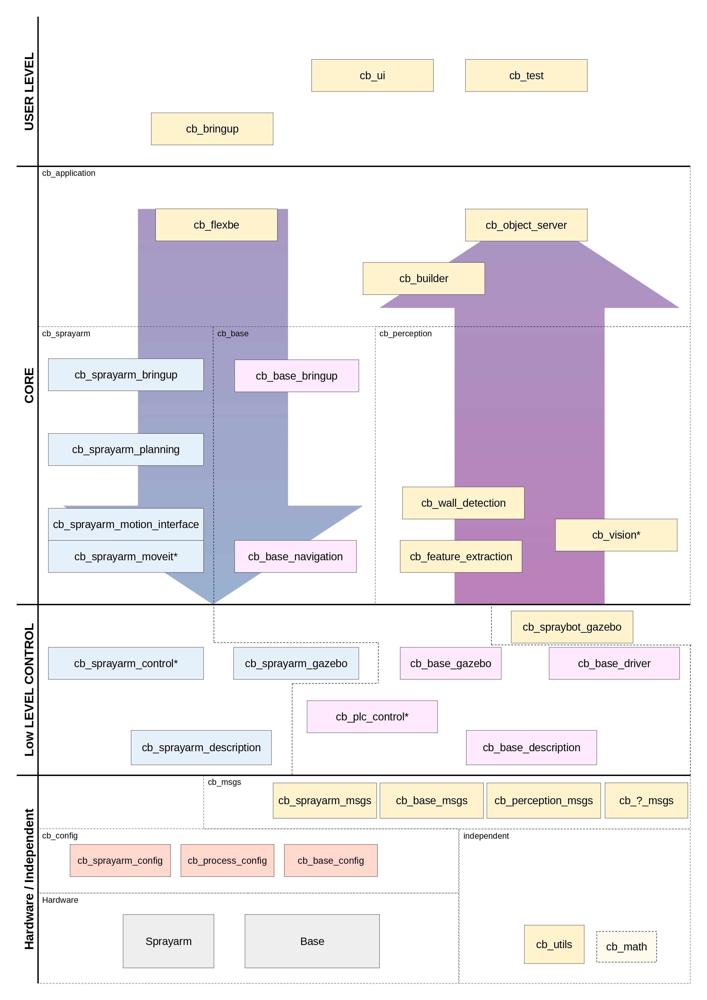
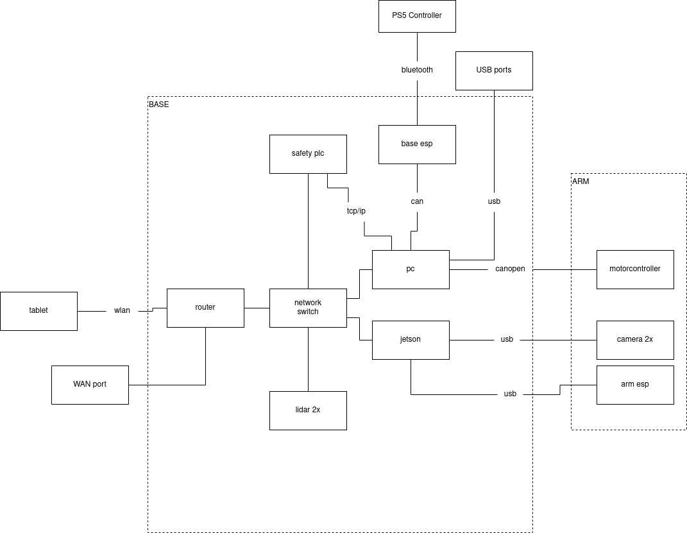
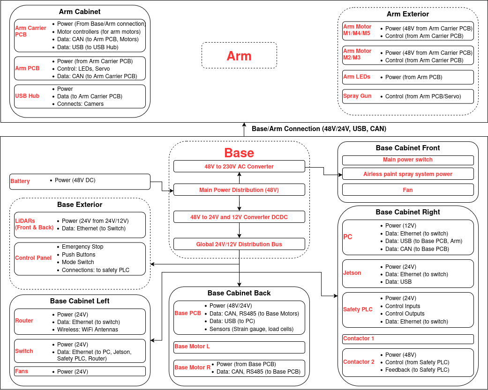

Field Engineer
Work Procedure - Deliverables
- Timeplan: Plan a timeline for the time being on the job site. Set some goals that the robot should achieve until the end of the time there (eg. be able to paint room 4 and 5 and the car park)
- Case studies: Assess site and identify all the possible case studies. Test and collect data (rosbags) for these.
- Troubleshooting: Note down all the issues faced, and the procedures to solve each. By the end of the project, there should be a streamline process with what guidelines to follow and in which order, depending on the issue faced.
- Feedback data: Give direct feedback to the team for every issue, and note them down to track their state/progress. Ideally use KANBAN to track the progress of the issues (error logging), and capture rosbags for each one of them. Transfer the issues into Github issues.
- Daily activity log: Fill a daily activity log with all the paints that took place every day, together with the issues.
- Performance indicators: Extract important information regarding the performance of the robot (eg time/meter, how often we need to clean the lidar, maintain the robot etc).
- Usage guidelines: Guide customer for robot operation, next steps, recording and training.
- Calibrate timings and odometry.
Specifications
| Specifications | Value | Notes |
|---|---|---|
| Packaging dimensions | 745 x 1225 x 1945 mm | |
| Mobile platform dimensions | 715 x 1225 x 806 mm | |
| Maximum height | 3.2 | |
| Maximum height | 3.2 | |
| Supply voltage | 48V DC (robot)/240V AC (airless) | |
| Optimum nozzle pressure | 16 (MPa) up to 22 | |
| Coverage | 160 - 200 (sqm/h) | |
| Charging time | 5h | |
| Operating time | 6h | |
| Back wheel diameter | 240mm |
Troubleshooting
Software Architecture

Network

Hardware
 edit
Electronics
Painting instructions
Robot cleaning instruction
Notes
Calibrate odometry
- Have a mark for the beginning position of the robot. Drive it forward few meters. Then backward. Observe how right or left the robot arrived compared to the initial mark. If it landed on the right side of it, that means the right wheel radious has to be smaller ot the left bigger. If it landed on the left side of it, that means the left wheel radious has to be smaller ot the right bigger.
- Change the values accordingly, in the cb_config/base_configs/base_MR0x/general.yaml for left_wheel_radius and right_wheel_radius.
- Run `rosparam load .../general.yaml`
- Run
```
rostopic pub -1 /spraybot/base/set_wheel_radii std_msgs/Float32MultiArray "layout:
dim:
- label: ''
size: 0
stride: 0
data_offset: 0
data: [
- Then command the robot to go straight for 2m:
```
rostopic pub -1 /spraybot/navigation/straight_line/goal cb_msgs/LineMotionActionGoal "header:
seq: 0
stamp:
secs: 0
nsecs: 0
frame_id: ''
goal_id:
stamp:
secs: 0
nsecs: 0
id: ''
goal:
step_size: 2.0
velocity: 0.2"
```
- Measure the distance between the initial mark, and where the robot reached.
- If it is less than 2m, then decrease the
If we move more than 2m, increase the values. If less, decrease them.
If we are turning on the left, decrease the left wheel radius
### Move 6th axis:
rostopic pub -1 /sprayarm/set_mounting_point_out_action_server/goal
False: To move the arm in / True: To move the arm out.
or:
cansend can0 009#01: 6th axis in cansend can0 009#02: 6th axis out
### To make USB syncable
lsblk -f #to find the USB UUID ./cb_tools/scripts/register_syncable_usb.sh #to make the USB syncable journalctl -u usb-sync-XXXX-XXXX.service -f #to verify, after you replug the USB
### Record rosbag
rosparam set /config/general/user/record_rosbag true python3 src/cb_bringup/scripts/record_rosbag.py
### Copy to usb
lsblk: Identify usb sudo mkdir /mnt/usb sudo mount -o uid=1000,gid=1000 /dev/sdb1 /mnt/usb sudo rsync -ah --info=progress2 --remove-source-files ~/rosbags/2025-07-31*.bag /mnt/usb/ (maybe add --no-owner --no-group) sudo umount /mnt/usb
### See rviz
On your laptop:
export ROS_IP=10.11.12.10 # or whatever the IP of the robot is export ROS_MASTER_URI=http://10.11.12.10:11311 rviz ```